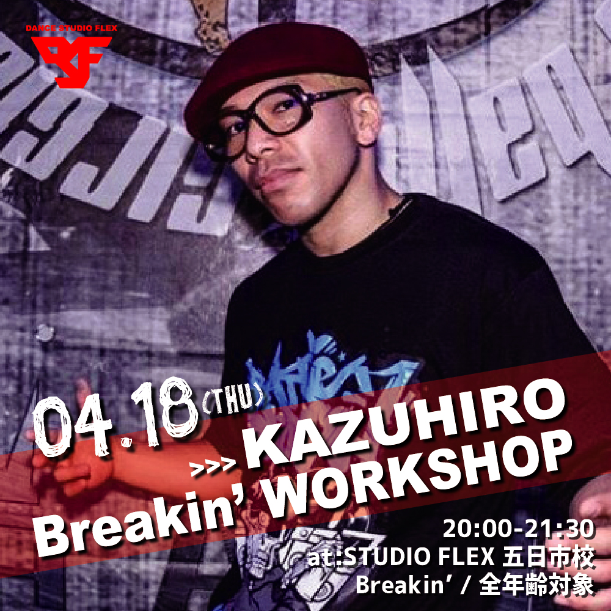

ダンスについて
工夫した点
１．ダンスの歴史
- １.１起源
- ダンスの起源は遥か昔にさかのぼり、文明が生まれる前から踊られていたと考えられており、文献として残っている最古のダンスは古代エジプトの壁画だと言われています。エジプト人女性2人が音楽に合わせて踊っている絵で、ベリーダンスのルーツとなった踊りという説もあります。出産の痛みをまぎらわすための躍り、農作物の豊作を祈るための躍りなど諸説があり、はっきりとしたダンスの目的はいまだに不明です。
- １.２多様性
- ダンスは世界中で自然発生したためジャンルは無限に存在していましたが、はじめから「ジャンル」として認識されていたわけではなく、異なる種類のダンスがどのようにジャンルとして認識され、派生していったのかの過程は解明されていませんが、とても古くから人々はダンスをジャンルに分けていた記録が残っています。
- １.３現代のダンスの認識
- 現代では、ダンスはアートでありダンサーはアーティストだと認識されています。かつてダンサーは「職業」でした。古くからエジプトでは結婚式で踊る風習があったり、宮廷で王様のために踊ったりしてお金を稼いでいたのです。そして、時代が進むにつれだんだんと職業ダンサーは仕事のためだけでなく芸術のために踊るようになり、アーティストになっていきました。
２．現代のダンス
- ２.１ダンスを職業に
- 2017年の「ダンススクール」の市場規模は約1500億円でした。現在、ダンス教室はさらに増えているため、市場規模は拡大しています。また、ダンスを職業にしている人はインストラクターだけではありません。有名な歌手の後ろで踊るバックダンサーはダンサーたちの憧れの職業です。ダンサーの中には菅原小春さんやKAZUHIROさんなど、バックダンサーの枠を超えて芸能人のように活躍する人たちもいます。ダンスを仕事にする、と言っても活躍する場はたくさんあり、求められる能力は仕事によって異なります。ダンスを職業にしたい場合、強みを分析して自分に合った仕事を選ぶことが大切です。

- ２.２話題のダンスニュース
- 有名アーティストとコラボするダンサーが度々話題になっています。菅原小春さんが米津玄師さんの歌に合わせて踊り、家入レオさんのバックダンサーをつとめたKAZUHIROさんのダンスもインターネット上で話題となりました。ダンスにテクノロジーを導入していく風潮も高まってきています。「Everybody
dance
now」というYouTubeに上げられた動画では、ダンス素人の女性がブルーノ・マーズのダンスを完全にコピーしている様子を見ることができます。プロの動きを画面上で素人の動きにあわせることが、カリフォルニア大学の研究によって可能になりました。今はまだ試作段階ではありますが、今後この技術を生かすとダンスを上手に踊ることができない歌手が、CGなしでプロダンサー並みのダンスをミュージックビデオで披露することも可能になります。数年前から、蛯名健一さんのようにプロジェクションマッピングとダンスを融合させて、独特の世界観を作り出すパフォーマンスも人気となっています。
- ２.３今後のダンス業界
- 今後のダンス業界はさらに規模が大きくなっていくと考えられます。ダンスが現在では義務教育のカリキュラムの一環となり、ダンスのインストラクターの検定も始まりました。ダンスに触れる機会が増えることで確実にダンス人口は増えていき、コミケのような新しいマーケットが構築されていくのではないかと筆者は予想しています。また、前述したようにデジタル技術の発展によりミュージカルなどダンスによるパフォーマンスの質は向上する一方です。演じる規模も大きくなっていき、売上も上がっていくでしょう。つまり、ダンス業界全体が成長していくことは間違いありません。ダンスを始めるなら今がチャンスです！興味がある方はぜひスクールに足を運んでみてくださいね。
ジャンル紹介
トップに戻る